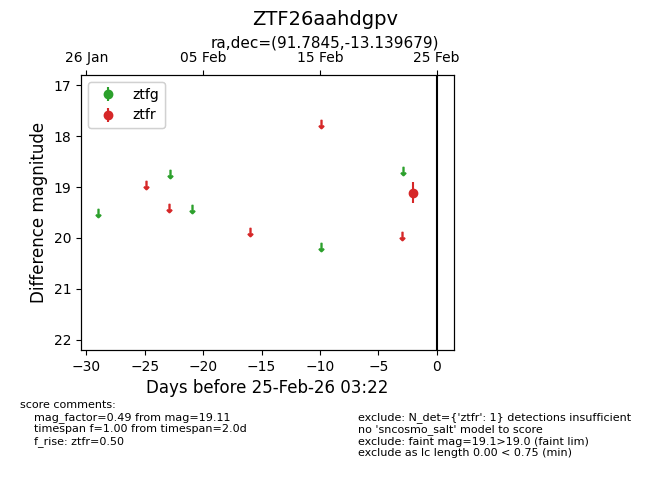
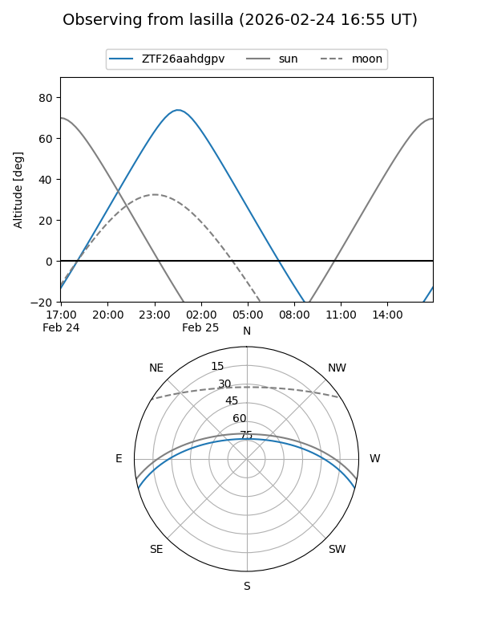
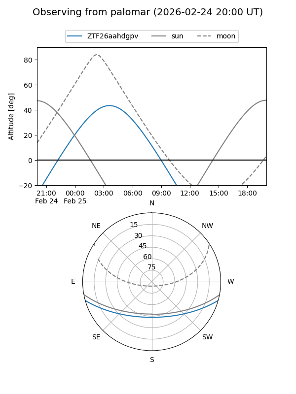

ZTF26aahdgpv
Target ZTF26aahdgpv at 2026-02-25 03:23
Aliases and brokers:
FINK: link
Lasair: link
ALeRCE: link
alt names
ZTF26aahdgpv (ztf,fink_ztf)
Coordinates:
equatorial (ra, dec) = 91.7845,-13.13968
equatorial (HMS+DMS) = 06:07:08.28,-13:08:22.85
galactic (l, b) = (219.9128,-15.67269)
Flags:
Photometry:
last ztfr=19.11
1 ztfr detections
Lightcurve

Visibility


Additional plots